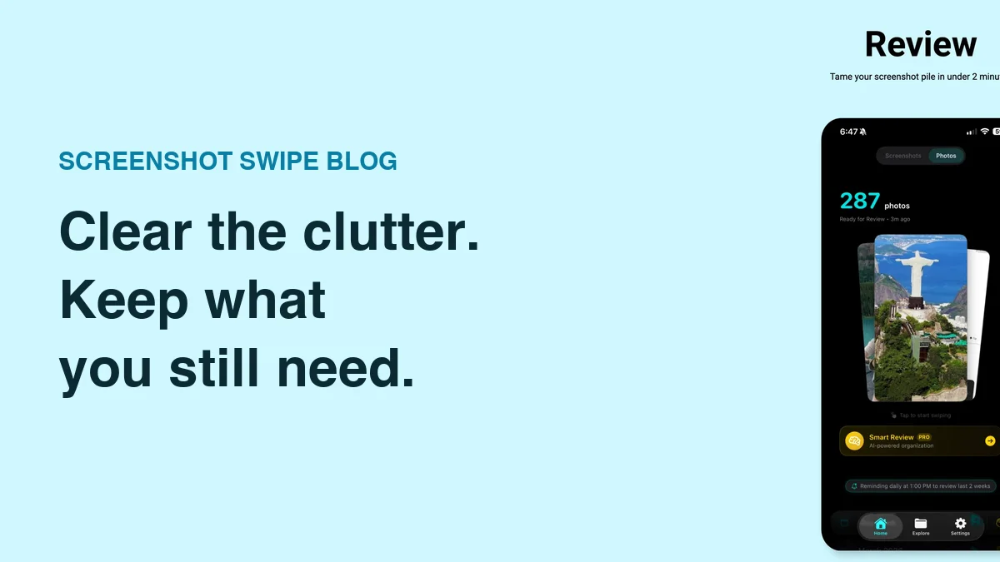

How to Delete Screenshots on iPhone (Without Losing the Important Ones)

Quick answer: Open Photos → Albums → Media Types → Screenshots, tap Select, then touch and drag across the grid to select hundreds at once, and tap the trash icon. Deleted screenshots sit in Recently Deleted for 30 days — empty that album too if you need the storage back immediately.
The average screenshot is useful for about a day. The receipt gets expensed, the address gets driven to, the meme gets sent. Then it sits in your camera roll for three years.
Apple gives you decent bulk-delete tools, they're just buried. Here's the fastest built-in method, what to do about the screenshots you actually need, and when a dedicated app earns its place.
Where do screenshots live in the Photos app?
Photos automatically files every screenshot into a dedicated album. Open Photos → Albums, scroll down to Media Types, and tap Screenshots. Everything in this album is a screenshot and nothing else is, which makes it the safest place to bulk delete — you can't accidentally catch a photo of your kid in the selection.
How do you bulk delete screenshots with the built-in tools?
- Open the Screenshots album (Photos → Albums → Media Types → Screenshots).
- Save the keepers first. Scan for receipts, confirmations, and anything with information you still need. Favorite them or move them to an album now — it's much harder to spot them mid-purge.
- Tap Select, then drag. Touch the first screenshot and slide your finger across the row, then down the edge of the grid. iOS selects everything you pass over. A thousand screenshots takes about ten seconds.
- Tap the trash icon and confirm.
- Empty Recently Deleted if you need space now. Photos → Albums → Recently Deleted → Select → Delete All. Until you do this, the storage isn't actually free.
Safety net: everything you delete stays in Recently Deleted for up to 30 days. A mistaken delete is recoverable with two taps — a mistaken "Delete All" from Recently Deleted is permanent.
Why doesn't deleting screenshots free up storage right away?
Because Recently Deleted is a holding pen, and its contents still count against your storage. This is the single most common complaint about photo cleanup: you delete 2,000 screenshots, check Settings, and the number hasn't moved. Empty Recently Deleted and it will.
One more wrinkle: if iCloud Photos is on, deletions sync everywhere. Deleting a screenshot on your iPhone removes it from your iPad and Mac too.
What about the screenshots you want to keep?

Keeping a screenshot in Screenshot Swipe attaches a note and tags, so it stays findable.
The delete-everything approach fails for one reason: some of those screenshots are the only copy of information you need. So people keep all 3,000 rather than risk losing 30. That math is the whole problem.
This is the case for a swipe-based cleanup app. We make Screenshot Swipe for exactly this workflow: swipe left to queue junk for batch deletion, swipe right to keep — and everything you keep gets on-device OCR, optional notes, and tags, so the 30 that matter become searchable instead of buried. The triage itself is faster too: a flick per screenshot instead of a careful tap.
Other swipe apps like Swipewipe and Slidebox handle the delete side well if you're clearing your whole camera roll — we compared them in our screenshot cleanup app roundup.
Frequently asked questions
Does deleting screenshots free up iPhone storage immediately?
No. Deleted screenshots sit in Recently Deleted for up to 30 days and still count against storage. To reclaim space right away, open Photos → Albums → Recently Deleted, tap Select, then Delete All.
Can I delete all screenshots at once?
Yes, in practice. The Screenshots album under Media Types plus the Select-and-drag gesture selects hundreds in seconds. iOS has no literal delete-all button, but the drag gesture is nearly as fast.
How do I recover a screenshot I deleted by mistake?
Photos → Albums → Recently Deleted, find it, tap Recover. Anything from the last 30 days is there. Past 30 days, it's gone unless you have a backup from before the deletion.
Will deleting screenshots on my iPhone delete them from iCloud?
Yes, if iCloud Photos is enabled. Your library is synced, so deletions propagate to every signed-in device.
What's the fastest way to delete hundreds of screenshots?
For a pure wipe, Select-and-drag in the Screenshots album. If some of them matter, a swipe app is faster overall because keep-or-delete becomes one flick per screenshot, and the keepers get organized as you go.
The two-minute weekly version
- Do the big purge once using the drag-select method above, or a swipe app if you need to keep some.
- Empty Recently Deleted to actually reclaim the storage.
- Set a weekly reminder to clear the last seven days of screenshots. It's 10–30 items — under two minutes.
- Save information, not pixels. If a screenshot exists to remember something, give it a note or tag when you keep it so future-you can search for it.
Clear this week's screenshots in under two minutes
Screenshot Swipe is free on the App Store. Swipe to triage, keep with notes and tags, and search the text inside everything you save.
Download on theApp Store